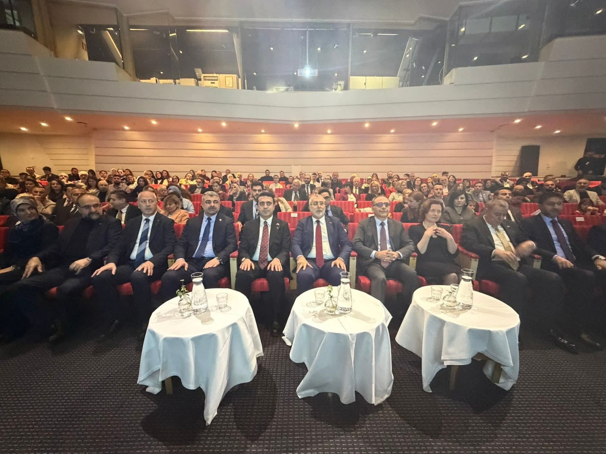

Degistiren is birligine inaniyoruz.
AB projelerinin hizmetinde 20 yili askin deneyim.
Ögrenme, gelisim ve uluslararasi is birligine tutkulu bir danismanlik sirketi.
Erasmus+ projeleriyle her yil Avrupa genelindeki kuruluslar arasinda köprüler kuruyoruz — Isveç'ten Ispanya, Portekiz, Almanya, Macaristan, Türkiye ve daha pek çok ülkeye.
Görevimiz; ögrencilere, ögretmenlere ve meslek profesyonellerine, yeni bakis açilari, bilgi ve aglar ilham eden degisim programlari araciligiyla hem mesleki hem kisisel olarak büyüme firsati vermektir.
-
2004
Isveç'te Leonardo da Vinci, Comenius, Grundtvig, Central Financial Project ve çesitli fon projeleri dâhil olmak üzere çok sayida AB projesini basariyla yürüttük.
-
2014
Programlar Erasmus+'in parçasi oldu. Kalite, kapsayicilik ve gelisime odaklanarak projeler yürütmeye devam ediyoruz.
-
Bugün
Deneyimli ve özverili ekibimizle sürecin tamamini üstleniyoruz: proje fikri ve basvurudan uygulama, takip ve raporlamaya kadar.
Avrupa Birligi'nin egitim ve gelisim alanindaki amiral gemisi programi.
1987'deki baslangicindan bu yana program, milyonlarca insana yurt disinda egitim görme, staj yapma veya uluslararasi projelere katilma imkâni verdi.
-

Yurt disinda egitim veya staj
-

Gönüllülük projeleri ve uluslararasi is birlikleri
-

Okullar, üniversiteler ve sirketlerle aglar
-

Dil becerileri ve kültürlerarasi anlayis
Ilk düsünceden gerçek degisime.
Erasmus+ yolculugunun tamaminda deneyimli bir is ortagi.
Bundan sonraki dört adim, yürüttügümüz her projenin omurgasini olusturur — fikir ve finansmandan uygulama, etki ve raporlamaya kadar. Ardindan projeyi zaman içinde yerinde tutan gelir: takip ve ortaklik.

Fikir gelistirme ve dogru finansman yolu.
Stratejik pusulamizla, ilgili, uygulanabilir ve Erasmus+ önceliklerine tam uyumlu fikirler gelistirmenize yardimci oluyoruz. Ihtiyaçlarinizi analiz eder, net hedefler belirler ve projeyi dogru finansman yoluyla eslestiririz.
Sunduklarimiz
-
Kurumun bugün nerede durdugunu, hangi ihtiyaçlarin en güçlü oldugunu ve katilimcilarin tam olarak kimler oldugunu haritalandiririz. Basvurudaki her sey bu temele oturur.
-
Fikir, o yilin çagrisindaki önceliklere göre sekillendirilir; böylece proje en basindan programin diliyle konusur.
-
Hangi program bileseninin ve hangi basvuru turunun hedefiniz, bütçeniz ve zaman planinizla en iyi örtüstügünü inceleriz.
-
Ihtiyaçlar, hedefler, faaliyetler ve sonuçlar tutan bir zincire baglanir. Degerlendiricilerin aradigi mantik budur.
-
Yetkinligi sizinkini tamamlayan ortaklar bulmaniza yardimci olur ve iliskiyi basvuru sunulmadan önce kurariz.

Basvuru, bütçe, konsorsiyum olusturma ve uygulama.
Erasmus+ standartlarina uygun kalite, yapi ve verimliligi saglamak için proje sürecinin tamaminin — basvurudan nihai rapora kadar — sorumlulugunu üstleniyoruz.
Desteklediklerimiz
-
Basvuruyu yazar, yapilandirir ve sunulmadan önce degerlendirme ölçütlerine göre inceleriz.
-
Bütçe, programin birim maliyetleri ve götürü bedelleri üzerine kurulur; böylece kalemler en basindan dogru hesaplanir.
-
Konsorsiyumu bir araya getirir, rolleri dagitir ve ortak kuruluslar arasindaki iletisimi bir arada tutariz.
-
Ortaklik sözlesmeleri, is bölümü ve belgelendirme rutinleri proje baslamadan yerli yerine oturur.
-
Projeyi ilerletir, zaman planini korur ve raporlamanin yol boyunca toplanmis belgelere dayanmasini saglariz.
-
Riskler erken tespit edilir ve yol boyunca izlenir; sapmalari ele almak için destek saglanir.

Yayginlastirma, yararlanma ve fayda gerçeklestirme.
Sonuçlarinizin — proje bittikten sonra da — gerçek ve uzun vadeli deger yaratmasini sagliyoruz; AB'nin sonuçlarin yayginlastirilmasi ve yararlanilmasina iliskin gereklilikleriyle uyumlu biçimde.
Çalisma alanlarimiz
-
Sonuçlara kimin, hangi kanallardan ve ne zaman ulasmasi gerektigine dair bir plan — yalnizca bir kapanis konferansi degil.
-
Sonuçlarin proje bittikten sonra hem kendi kurumunuzda hem baskalari tarafindan nasil ileri tasinacagi ve kullanilacagi.
-
Projenin gerçekte ne verdigini izler ve bunu günlük isleyiste görülen degisikliklere dönüstürürüz.
-
Deneyimler yönetisim belgelerine, yetkinlik gelisimine ve çalisma biçimlerine baglanir; böylece yer eder.
-
Sonuçlari baskalari için aranabilir ve kullanilabilir hale gelecekleri yerlerde yayimlamaniza ve sunmaniza yardimci oluruz.

AB gereklilikleri, raporlama ve denetim hazirligi.
Projenizin tüm resmi gereklilikleri karsilamasini ve hem raporlama hem denetim için tam hazir olmanizi sagliyoruz.
Sunduklarimiz
-
Projeyi program kurallarina ve hibe sözlesmesi türünüze uygulanan mali kosullara göre kontrol ederiz.
-
Raporlar, ayrintilar silinmeden yol boyunca toplanmis belgelere dayanir; sonradan degil.
-
Katilimci listeleri, belgeler ve evraklar gözden geçirilir; her kalemin gerekli dayanagi olur.
-
Malzemeyi önceden tarar ve inceleme gelmeden önce tamamlanmasi gereken noktalari isaretleriz.
-
Proje boyunca dogru seyin dogru anda belgelenmesini saglayan basit rutinler.

Proje dönemi boyunca yapi, kalite ve kontrol.
Erasmus+ kapsaminda kalite, hedefe ulasma ve tam mevzuat uyumunu saglayan profesyonel proje takibi sunuyoruz. Sistematik bir çalisma biçimiyle projenin gelisimine tam bakis verir ve proaktif hareket etmenizi destekleriz.
Takip destegimiz sunlari kapsar
-
Yapilani planlananla karsilastiririz; sapmalar hâlâ düzeltilebilirken görünür.
-
Gerçeklesme, program kurallari ölçüt alinarak bütçeye kalem kalem izlenir.
-
Göstergeler nihai rapor yazilirken degil, proje boyunca izlenir.
-
Belgelendirmenin programin istedigi biçim ve kalitede oldugunu kontrol ederiz.
-
Riskler sürekli tartilir; neyin ne zaman yapilmasi gerektigine dair somut öneriler alirsiniz.
-
Tüm taraflari ayni tabloya yerlestiren yinelenen durum degerlendirmeleri.
-
Rapor sunulmadan önce içerigi ve dayanaklari son bir kez gözden geçiririz.

Güçlü Avrupa is birlikleri kurun.
Erasmus+ projeleriniz için dogru ortaklari bulmaniza, degerlendirmenize ve yerlestirmenize yardimci oluyoruz. Odak: kalite, tamamlayici yetkinlikler ve uzun vade.
Yardim ettiklerimiz
-
Projenin yönelimine uyan program ve ortak ülke kuruluslarini arariz.
-
Odak, konsorsiyumda yer doldurmak degil, tamamlayici yetkinliktir.
-
Ilk temasi biz kurar ve is birligi yerli yerine oturana kadar diyalogu canli tutariz.
-
Roller, sorumluluklar ve taahhütler yaziya dökülür; herkes neye baglandigini bilir.
-
Zaman içinde duran — ve tercihen birden fazla projeyi tasiyan — bir konsorsiyum.
Güçlü ortakliklar, yüksek kalitenin ve iyi proje sonuçlarinin anahtaridir.
Okullar, belediyeler ve kuruluslarla genis bir is birligimiz var.
Ister bir belediyeyi, bir okulu ister kamu kurulusunu temsil edin — bize ulasin, neyi basarmak istediginizi ilk görüsmede konusalim.
Bize ulasin- Belediyeler ve egitim müdürlükleri
- Ilkögretim okullari, liseler ve yetiskin egitimi
- Halk yüksekokullari ve meslek yüksekokullari
- Tarim ve meslek örgütleri
- Vakiflar, dernekler ve toplumsal aktörler